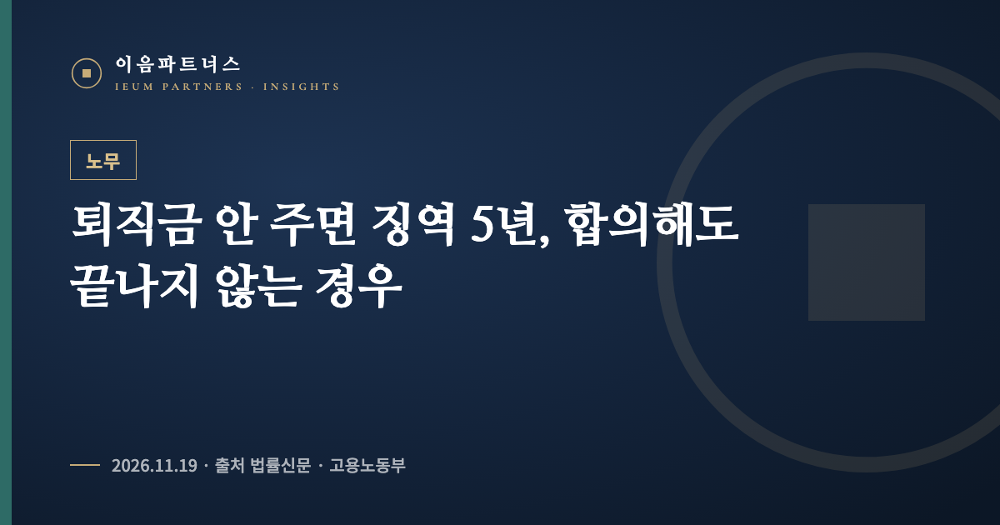

퇴직금 안 주면 징역 5년, 합의해도 끝나지 않는 경우

퇴직금이나 임금이 밀려도 직원과 합의하면 끝난다고 생각하는 대표님이 적지 않습니다. 그런데 2026년 하반기부터 체불 처벌이 무거워졌고, 일부 사업주는 합의를 해도 처벌을 피하기 어려워졌습니다. 이 글에서는 무엇이 바뀌었는지, 합의가 통하지 않는 경우는 언제인지, 대표님이 미리 점검할 것을 정리합니다.
체불 문제는 노동청 진정이 들어온 뒤에야 자료를 찾기 시작하면 대응이 어려워집니다. 퇴직금과 미지급 수당을 지금 한 번 점검해 두시길 권하며, 우리 회사 상황이 궁금하다면 카카오톡 채널 이음파트너스로 편하게 물어보셔도 됩니다.
체불 처벌, 무엇이 바뀌었나
퇴직금 체불은 2026년 9월 18일부터, 임금 체불은 2026년 10월 8일부터 법정형(법이 정한 처벌의 범위)이 올라갔습니다. 공소시효(재판에 넘길 수 있는 기간)도 함께 늘었습니다(법률신문).
| 구분 | 내용 |
|---|---|
| 법정형 | 3년 이하 징역 또는 3천만 원 이하 벌금 → 5년 이하 징역 또는 5천만 원 이하 벌금 |
| 시행일 | 퇴직금 체불 2026년 9월 18일, 임금 체불 2026년 10월 8일 |
| 공소시효 | 개정법 시행 뒤 생긴 체불부터 5년 → 7년 |
| 처벌 대상 | 퇴직 후 14일 안에 금품을 정산하지 않은 경우, 재직자 임금을 정기 지급일에 주지 않은 경우, 휴업수당·가산수당 미지급, 퇴직연금 미납 부담금 미지급 등 |
합의하면 정말 끝날까
임금·퇴직금 체불은 반의사불벌죄(피해자가 처벌을 원하지 않으면 재판에 넘길 수 없는 범죄)입니다. 직원이 1심 판결 전까지 처벌을 원하지 않는다고 밝히면 검사는 기소할 수 없고, 실무에서도 체불액을 갚고 처벌불원서를 받아 사건이 끝나는 경우가 대부분이었습니다.
그러나 2025년 10월 23일부터는 예외가 생겼습니다. 체불로 명단이 공개된 사업주가 공개 기간에 다시 체불하면 반의사불벌 규정이 적용되지 않고, 이번 개정법도 이 예외를 그대로 유지했습니다. 이 경우 뒤늦게 전액을 갚고 처벌불원서를 받아도 대표가 최대 징역 5년의 범죄로 기소될 수 있습니다(법률신문).
명단 공개 대상은 3년 이내 체불로 2회 이상 유죄가 확정되고 1년 이내 체불 총액이 3천만 원 이상인 사업주이며, 공개 기간은 3년입니다(고용노동부 보도자료). 과거 체불 이력이 있는 회사라면 지금 공개 대상인지, 언제까지인지부터 확인해 보셔야 합니다.
고의가 없었다면 처벌을 피할 수 있을까
임금을 줄 의무가 있는지, 얼마인지 다툴 만한 근거가 있거나, 최선을 다했는데도 경영 악화로 주지 못한 사정이 인정되면 고의가 없다고 보아 처벌을 면할 여지는 있습니다. 다만 이런 주장은 근로감독관 조사 단계부터 객관적인 자료로 뒷받침되어야 받아들여질 수 있습니다.
법률신문은 “체불 리스크는 사전 관리로 상당 부분 줄일 수 있다”고 짚었습니다(법률신문). 진정이나 고소가 이미 접수됐다면 초기부터 노무사·변호사와 대응 방향을 정하는 것이 좋습니다.
대표님이 지금 확인할 것
- 퇴사일부터 14일 안에 퇴직금과 남은 임금을 모두 정산하고 있는지, 늦어질 땐 기한 연장 합의를 서면으로 받고 있는지
- 연장·야간·휴일 가산수당과 연차 미사용수당을 실제 근로시간대로 계산하고 있는지
- 확정기여형(DC형) 퇴직연금 부담금 가운데 미납된 부분이 없는지, 재직자 임금도 늦으면 연 20% 지연이자가 붙는다는 점을 급여 일정에 반영했는지
- 노동청 진정이 들어오면 첫 출석 전에 임금 계산 근거와 지급 경위 자료를 낼 수 있는지
참고한 자료
- 임금체불·퇴직금 체불 처벌 강화, 합의하면 끝나는가 — 법률신문 (2026.11.19)
- 상습체불사업주 777명, 1년간 신용제재 받는다 — 고용노동부 (2026.11.03)
체불은 의도보다 결과로 판단되는 경우가 많습니다. 퇴직금과 수당 계산이 맞는지 함께 점검해 보고 싶다면 카카오톡 채널 이음파트너스로 문의해 주세요.
※ 이 글은 일반적인 정보 제공을 위한 것으로, 개별 사안은 세무사·노무사 등 전문가와 함께 확인하시기 바랍니다.